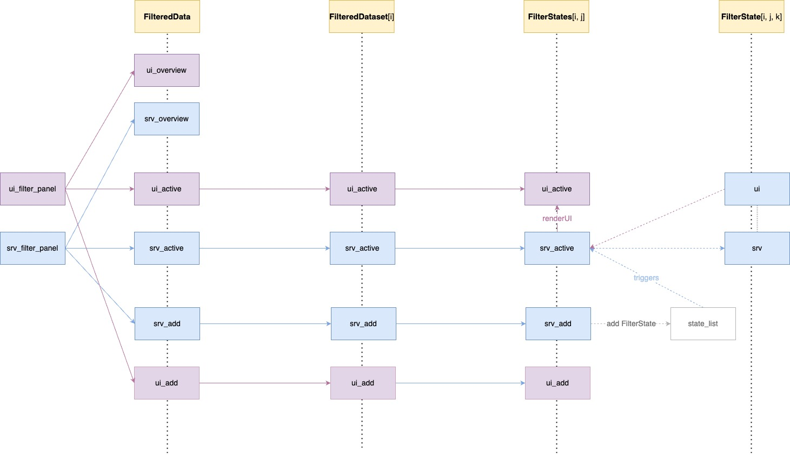

teal.slice classes
NEST Core Dev Team
10/07/2023
teal-slice-classes.RmdThis vignette provides a deep dive into the design of the
teal.slice package. It is intended for advanced developers.
If you want to merely use teal.slice, the Filter panel
for developers vignette should satisfy all your needs.
Introduction
The teal.slice package is composed of multiple classes,
whose primary purpose is to provide a shiny module for
managing and displaying filters. The top class in the structure is
FilteredData. Other modules in the app can interact with
FilteredData to make filter calls and obtain filtered
data.

The FilteredData object contains one or more
FilteredDataset objects. While FilteredData
manages the entire filter panel, each FilteredDataset is
responsible for filtering a single data set.
FilteredDataset contains one or more
FilterStates objects, each corresponding to one data
structure like a data.frame, a
SummarizedExperiment, or a
MultiAssayExperiment. FilterStates holds a
collection of FilterState objects, each representing a
single filter condition applied on one variable.
FilterStates can also hold FilterStateExpr
objects. This is a variation of FilterStates that focuses
on the filter expression regardless of the underlying data. The
expression can refer to one or several variables.
FilteredData, FilteredDataset,
FilterStates, and
FilterState/FilterStateExpr are all
R6 classes and objects of those classes form a hierarchy
but there is no inheritance between them.
Each FilterState/FilterStateExpr object
contains one teal_slice object. teal_slice
stores all information necessary to define a filter. It is not an
R6 class, it does not have any innate methods or behaviors
and does not produce any shiny modules. Its sole purpose is
to store filter information.
Initialization

As part of the teal workflow, FilteredData,
FilteredDataset, and FilterStates are created
instantly when the data is loaded and remain unchanged. One
FilteredData object is initialized on
TealData. A FilteredDataset is initialized for
each data set. One or more FilterStates are initialized,
depending on the type of data set.
On the other hand, a FilterState is initialized each
time a new filter is added. The values of the FilterState
can be changed, and it can also be removed and added again.
The key mechanism in the new filter panel is in
FilterStates class. One can think of
FilterStates as equivalent to a single, possibly compound,
subset call made on one data structure. While FilterState
represents a logical predicate on one vector, e.g
SEX == "F", FilterStates will compose all
predicates of its member FilterState objects into a call to
a subsetting function,
e.g. data <- subset(data, SEX == "F" & RACE == "CAUCASIAN").
In the case of a data.frame, a single
dplyr::filter call is sufficient to subset the whole data
set. A MultiAssayExperiment on the other hand contains
patient data in the @colData slot and multiple experiments
in the @ExperimentList slot, and all of these objects have
to be filtered by separate subsetting calls. Therefore, subclasses of
FilterStates exist to handle different kinds of data
structures and they use different subsetting functions.
Class Description
This section provides a detailed description of all classes that make up the filter panel structure.
FilteredData

FilteredData is an object responsible for managing the
filter panel. It sits on top of the class structure and handles the
shiny modules of the subclasses.
FilteredData provides several API methods that can be
used to access reproducible subsetting calls and the resulting filtered
data. It also allows external modules to manage filter states through
functions such as get_filter_state,
set_filter_state, remove_filter_state, and
clear_filter_state.
FilteredDataset

FilteredDataset is a class that keeps unfiltered data
and returns filtered data based on the filter call derived from the
contained FilterStates. FilteredDataset class
objects are initialized by FilteredData, one for each data
set. FilteredDataset contains a single
TealDataset object and one-to-many
FilterStates depending on the type of that object.
FilteredDataset stores data set attributes, joins keys to
other data sets, and also combines and executes the subsetting calls
taken from FilterStates.
The following FilteredDataset child classes are
currently implemented:
-
DefaultFilteredDatasetfordata.frame. -
MAEFilteredDatasetforMultiAssayExperiment.
FilterStates

When the app starts, FilteredDataset initializes one or
more FilterStates objects, one for each component of the
underlying data set. Every FilterStates object is
responsible for making one subset call. For example, a
MAEFilteredDataset will create one
FilterStates for its colData and one
FilterStates for each of its experiments. Every
FilterStates will return a separate subsetting call, which
will be used to subset the entire MultiAssayExperiment.
The following FilteredDataset child classes are
currently implemented:
-
DFFilterStatesfordata.frame; usesdplyr::filterto filter on columns. -
MAEFilterStatesforMultiAssayExperiment; usesMultiAssayExperiment::subsetByColDatato filter on columns of theDataFramein the@colDataslot. -
SEFilterStatesforSummarizedExperiment; uses thesubsetmethod forSummarizedExperimentto filter on columns ofDataFramesin the@colDataand@rowDataslots. -
MatrixFilterStatesformatrix; uses the[operator to filter on columns.
FilterStates serves two shiny-related
purposes:
ui/srv_addallows adding aFilterStatefor a selected variable. The variables included in the module are the filterable column names of the provided data set. Selecting a variable adds aFilterStateto thereactiveValstored in theprivate$state_listprivate field. The subtype of the createdFilterStateautomatically determined based on the class of the selected column.ui/srv_activedisplays cards of the currently existingFilterStateobjects. EveryFilterStateobject serves a remove button andFilterStatesreacts to clicking that button by removing the respectiveFilterStatefromprivate$state_listand destroying it’s observers.ui/srv_activealso contains a remove button that removes allFilterStateobjects within thisFilterStates.
FilterState

This class controls a single filter card and returns a condition call
that depends on the selection state. A FilterState is
initialized each time FilterStates adds a new filter.
Different classes of data require different handling of choices so
several FilterState subclasses exist and each of them
presents a different user interface and generates a different subsetting
call. A FilterState is created as follows:
-
FilterStatescreatesteal_slicewithdatanamebased on the parent data set andvarnamebased on the selected variable - the
teal_sliceis wrapped inteal_slicesand passed toFilterStates$set_filter_state -
FilterStates$set_filter_state_implis called -
FilterStates$set_filter_state_implcallsinit_filter_state, passing the appropriate variable asx -
init_filter_statesis a generic function that dispatchesx,teal_sliceand other arguments to the respective child class constructor:
-
LogicalFilterStateforlogicalvariables. Presents a checkbox group. Call example:!variable. -
RangeFilterStatefornumericvariables. Presents an interactive plot as well as two numeric inputs. Selection are always two values that represent inclusive interval limits. Call example:variable >= selection[1] & variable <= selection[2] -
DateFilterStateforDatevariables. Presents two date inputs. Selection is two values that determine inclusive interval limits. Call example:variable >= selection[1] & variable <= selection[2]. -
DatetimeFilterStateforPOSIXctandPOSIXltvariables. Similar toDateFilterState. -
ChoicesFilterStateforcharacterandfactorvalues. Additionally, all classes will be passed toChoicesFilterStateif their number of unique values is lower than that ingetOption("teal.threshold_slider_vs_checkboxgroup"). Presents either a checkbox group or a drop-down menu. Depending on settings, allows either only one or any number of values to be selected. Call examples:variable == selection,variable %in% selection. -
EmptyFilterStatefor variables that contain only missing values. Does not return calls.
All child classes handle missing values, and
RangedFilterState also handles infinite values.
The FilterState constructor also takes the
extract_type argument, which determines how the call is
constructed extract_type can be unspecified,
"matrix" or "list" and its value corresponds
to the type of the variable prefix in the returned condition call. If
extract_type is "list", the variable in the
condition call is <dataname>$<varname>, while
for "matrix" it would be
<dataname>[, "<varname>"].
FilterStateExpr
Similarly to FilterState, FilterStateExpr
controls a single filter card and returns logical expression. However,
while FilterState generates the call based on the selection
state, in FilterStateExpr the call must be specified
manually and it must be a valid R expression.
teal_slice

teal_slice is a simple object for storing filter
information. It can be thought of as a quantum of information. A
teal_slice object is passed directly to
FilterState$initialize and is stored inside of the
FilterState to keep the current state of the filter.
Technically, all values used to generate a call are in
teal_slice. FilterState can be described as a
wrapper around teal_slice that provides additional methods
to handle filter state. It also contains the actual data (a single
column).
While teal_slice is not an R6 object and
does not encode any behaviors, it is implemented around a
reactiveValues object to allow shared state in advanced
teal applications.
See ?teal_slice for a detailed explanation.
Making a reproducible filter call
Overview

The diagram above presents the filter panel classes and their
responsibilities when composing filter calls. Code is generated by
nested execution of get_call methods.
FilteredData$get_call calls
FilteredDataset$get_call, which calls
FilterStates$get_call which in turn calls
FilterState$get_call.
FilterState$get_call() returns a single subsetting
expression (logical predicate).
FilterStates$get_call() returns a single complete
subsetting call by extracting expressions from all
FilterState objects and combining them with the
& operator.
FilteredDataset$get_call() returns a list of calls
extracted from all FilterStates objects.
FilteredData$get_call(<dataname>) returns a list
of calls extracted from the specified FilteredDataset.
Example

Calling datasets$get_call(<dataname>) in
teal modules executes a chain of calls in all filter panel
classes. Consider the following scenario:
FilteredDatacontains three data sets:ADSL,ADTTE,MAE, each stored in its ownFiteredDatasetobjectADSLis adata.frameso it can be filtered with a singledplyr::filtercall. This data set is stored inDefaultFilteredDataset, which holds a singleFilterStatesobject.FilterStatesconstructs adplyr::filtercall based on theFilterStateobjects present in itsprivate$state_list.When
FilterStates$set_filter_stateadds a newteal_slice, aFilterStateis created and added toprivate$state_listinFilterStates.FilterStatesgathers logical expressions from all of itsFilterStateobjects and composes them into adplyr::filter(ADSL, ...)call.Two new filters have been added:
SEXandAGE. This causes initialization of appropriateFilterStatesubclasses:ChoiceFilterStateandRangeFilterState. EachFilterStateproduces a subsetting expression:SEX == "F"andAGE >= 20 & AGE <= 60. The expressions are combined with&and passed todplyr::filter, producingADSL <- dplyr::filter(ADSL, SEX == "F" & AGE >= 20 & AGE <= 60).DefaultFilteredDatasetputs this call in a list and returns it toFilteredData.ADTTEis also adata.frameso theFilteredDatasetthat stores it works much the same as the one forADSL. The one difference is that thedplyr::filtercall forADTTEis followed by andplyr::inner_joincall to merge the filtering result with the parent data set (ADSL) so that key columns remain consistent. Note that this only done whenjoin_keysis specified - otherwiseADTTEwould be treated as a separate data set and filtered independently.The
MAEdata set is aMultiAssayExperiment, which contains multiple sub-objects which can be filtered on. One of them isADSL-like patient data, stored as aDataFrameinMAE@colData, and others are experiments, typicallySummarizedExperimentobjects, stored inMAE@ExperimentList, which can be extracted usingMAE[["experiment name"]]. Therefore,FilteredDatasetMAEhas multipleFilterStatesobjects: one for subject data and one for each experiment.A
MAEFilterStatesobject is initialized for subject data and for this objectMultiAssayExperiment::subsetByColDatafunction is applied.MultiAssayExperiment::subsetByColDatahas two arguments:x(data) andy(conditions). Since all filter expressions are passed to one argument,MAEFilterStatesonly has onestate_list, just likeDFFilterStates. Adding new filters triggers the same actions as described in (4).A
SummarizedExperimentis more complicated as observations can be filtered based on itsrowDataandcolDataslots, both containDataFrames. Subsetting is done by a dedicated S4subsetmethod, which takes two key arguments:subsettakes logical expressions that will be applied torowDataandselecttakes logical expressions that will be applied tocolData.teal_sliceobjects that specify filters in aSummarizedExperimentmust contain anargelement, either"subset"or"select", to reflect which slot of the experiment they refer to. TheSEFilterStatesgathers logical expressions its memberFilterStateobjects, groups them by theargelement, and builds a call sosubsetwith two combined logical expressions passed to thesubsetandselectarguments.
Filter panel modules
The FilteredData object uses the
filter_panel_ui and filter_panel_srv methods
to put up a filter panel that can be used in any application. In
teal applications it will be placed on the right hand side.
The filter panel module does not return anything. Data, subsetting calls
and filter states are accessible by specific public methods:
get_data, get_call, and
get_filter_state, respectively. Typically, the filter panel
consists of three modules:
-
ui/srv_overviewdisplays observation counts filtered vs unfiltered data -
ui/srv_activedisplays active filter cards, which are created byFilterStateobjects -
ui/srv_addallows for adding filters
FilteredData does not handle data sets directly because
they may be of different types, rather, it calls respective methods in
lower level classes.
When a new filter is added using the “Add Filter Variable” module in
FilterStates, a new FilterState object is
initialized and added to private$state_list.
FilterStates$srv_active observes
private$state_list (which is a reactiveVal)
and when the state of the list changes (a filter is added added or
removed), it calls FilterState$server and uses
renderUI to display FilterState$ui.
